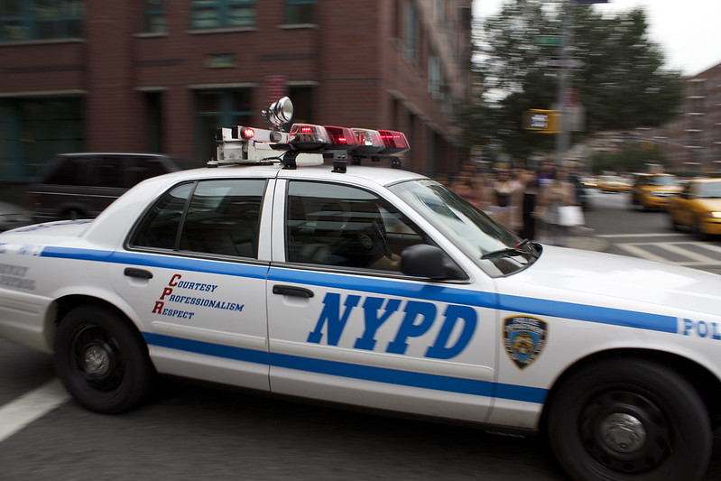

"NYPD" by Giacomo Barbaro is licensed under CC BY-SA 2.0 

 .
.
"NYPD" by Giacomo Barbaro is licensed under CC BY-SA 2.0 

 .
.
Over the course of the first year of Eric Adams’ administration, complaints filed by New Yorkers reporting abusive interactions with New York City Police Department officers skyrocketed. Between 2021 and 2023, the number of complaints rose by 51 percent, according to a report from the Civilian Complaint Review Board, the city’s independent police oversight agency.
Advocates were quick to point out the increase, arguing that it reflected an increasing culture of impunity. Now, a new data analysis shows a dramatic decrease in CCRB complaints filed over the last year. Between December 2023 and December 2024, a total of 2,791 complaints were filed by community members, according to data from the city’s Open Data portal. This is a stark drop compared to 5,604 complaints in 2023. In spite of the decrease, a precinct-by-precinct analysis shows that residents in the 75th precinct, which serves East New York and Cypress Hills, filed more complaints than those in any other precinct both years.
The CCRB reviews all complaints filed, then investigates and recommends disciplinary action to the NYPD. Under the oversight of Adams, former Police Commissioner Edward Caban intervened and tossed out hundreds of cases involving excessive use of force by NYPD officers. In light of this freedom to dismiss CCRB recommendations, some advocates caution against attributing the drop in complaints to improvements in the city’s culture of policing.
“Good people do work there, but the CCRB has virtually no real power,” said Robert Gangi, director of the nonprofit Police Reform Organizing Project. “Some people have figured out that there's very little help they're going to get from the CCRB,” he added.
During the open comment period at a Dec. 11 CCRB meeting, the public’s frustration with the board was palpable. Nick Constantino, a community member who said he’d experienced abuse at the hands of the NYPD, waved his hands in exasperation at the oversight agency’s members from a podium, echoing Gangi’s cynicism.
“This board is a cluster, a clusterfuck,” said Constantino. “Accountability? Transparency? You guys have no legs to stand on. Your office brushed me off like I’m nobody.”
The CCRB did not respond to a request for comment.